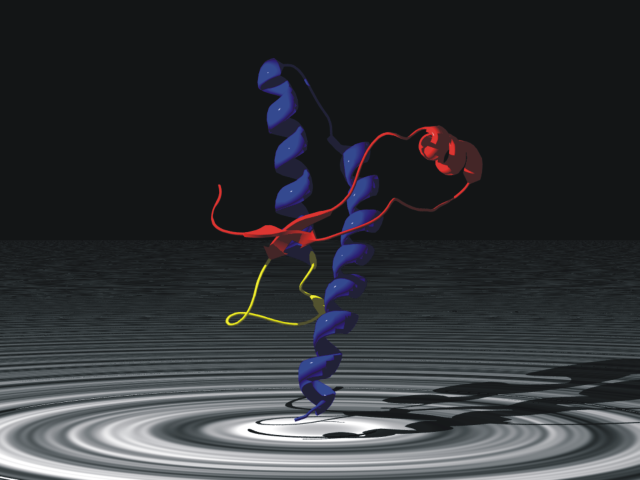
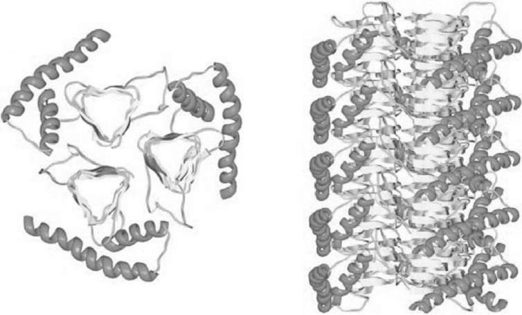
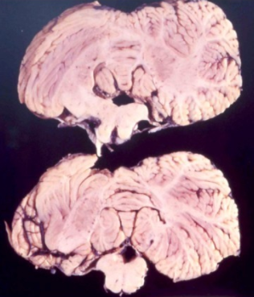

Ку́ру — редкое неизлечимое смертельное нейродегенеративное прионное заболевание, встречающееся в высокогорных районах Новой Гвинеи у аборигенов племени форе. Представляет собой форму трансмиссивной губчатой энцефалопатии (TSE), вызванную передачей аномально свернутых белков (прионов), что приводит к таким симптомам, как тремор и потеря координации из-за нейродегенерации. Впервые обнаружено в начале XX века.
Термин куру происходит от слова племени форе куриа или гурия («трястись») из-за дрожи тела, которая является классическим симптомом заболевания. Куру само по себе означает «дрожь». Также известна как «болезнь смеха» из-за патологических приступов смеха, которые являются симптомом заболевания. В настоящее время широко распространено мнение, что куру передавалась среди членов племени форе в Папуа — Новой Гвинее через погребальный каннибализм. Умерших членов семьи традиционно готовили и ели, что, как считалось, помогало освободить дух умершего. Женщины и дети обычно поедали именно мозг (в отличие от мужчин, которые поедали мышцы), орган, в котором наиболее концентрируются инфекционные прионы, что способствует передаче куру. Поэтому заболевание было более распространено среди женщин и детей.
Эпидемия, вероятно, началась, когда у жителя племени развилась спорадическая болезнь Крейтцфельдта-Якоба и он умер. Когда жители деревни съедали мозг, они заражались болезнью, а затем она передавалась другим жителям деревни, которые съедали их заражённые мозги.
После того как в начале 1960-х годов, когда впервые было высказано предположение, что куру передается через эндоканнибализм, люди форе перестали употреблять человеческое мясо, болезнь продолжала проявляться из-за длительного инкубационного периода куру, длящегося от 10 до более 50 лет. Эпидемия, наконец, резко пошла на спад спустя полвека, с 200 смертей в год в 1957 году до полного отсутствия смертей, по крайней мере, с 2010 года, при этом источники расходятся во мнениях о том, умерла ли последняя известная жертва куру в 2005 году или 2009
Клиническая картина
Куру — это трансмиссивная губчатая энцефалопатия, является заболеванием нервной системы, которое вызывает физиологические и неврологические последствия, которые в конечном итоге приводят к смерти. Характеризуется прогрессирующей мозжечковой атаксией или потерей координации и контроля над мышечными движениями.
Доклиническая или бессимптомная фаза, также называемая инкубационным периодом, длится в среднем 10-13 лет, но может быть и короче пяти и, по оценкам, длится до 50 или более лет после первоначального воздействия.
Клиническая стадия, которая начинается при первом появлении симптомов, длится в среднем 12 месяцев. Клиническое прогрессирование куру делится на три конкретные стадии: амбулаторную, сидячую и терминальную. Хотя существуют некоторые различия в этих стадиях у разных людей, они в значительной степени консервативны среди пораженного населения. До появления клинических симптомов у человека могут также проявляться продромальные симптомы, включая головную боль и боль в суставах ног.
На первой (амбулаторной) стадии у инфицированного человека могут проявляться неустойчивая осанка и походка, снижение мышечного контроля, тремор, трудности с произношением слов (дизартрия) и титубация тремора. Эта стадия называется амбулаторной, потому что человек все ещё может ходить, несмотря на симптомы.
На второй (сидячей) стадии инфицированный человек не способен ходить без поддержки и испытывает атаксию и сильную дрожь. Кроме того, человек проявляет признаки эмоциональной нестабильности и депрессии, но при этом проявляет неконтролируемый и спорадический смех. Несмотря на другие неврологические симптомы, сухожильные рефлексы все ещё сохраняются на этой стадии заболевания.
На третьей и последней (терминальной) стадии существующие у инфицированного человека симптомы, такие как атаксия, прогрессируют до такой степени, что уже невозможно сидеть без поддержки. Также появляются новые симптомы: у человека развивается дисфагия, которая может привести к серьёзному недоеданию, а также может развиться недержание мочи, потеря способности или желания говорить и невосприимчивость к окружающему, несмотря на сохранение сознания[15]. К концу терминальной стадии у пациентов часто развиваются хронические изъязвленные раны, которые могут быть легко инфицированы. Инфицированный человек обычно умирает в течение трех месяцев- двух лет после появления первых симптомов терминальной стадии, часто из-за пневмонии или других вторичных инфекций.
Главными признаками заболевания являются сильная дрожь и порывистые движения головой, что иногда сопровождается «улыбкой», которая подобна наблюдаемой у больных столбняком (risus sardonicus). Последнее, однако, не является типичным признаком. Обозначение «смеющаяся смерть» для куру — на совести сочинителей заголовков газетных статей. Члены племени форе так о болезни никогда не говорят.
Причины
Куру в основном локализовано среди людей форе и людей, с которыми они вступали в браки. Люди племени форе ритуально готовили и употребляли в пищу части тел членов своей семьи после их смерти, чтобы включить «тело умершего человека в тела живых родственников, помогая таким образом освободить дух умершего». Поскольку мозг является органом, обогащенным инфекционным прионом, у женщин и детей, употреблявших мозг, вероятность заражения была гораздо выше, чем у мужчин, которые преимущественно употребляли мышцы.
Прион

Инфекционный агент представляет собой неправильно свернутую форму белка, кодируемого хозяином, называемого прионом (PrP). Прионные белки кодируются геном прионного белка (PRNP). Две формы приона обозначаются как PrP c, который представляет собой нормально свернутый белок, и PrP sc, неправильно свернутая форма, которая вызывает заболевание. Две формы не отличаются по своей аминокислотной последовательности; однако патогенная изоформа PrP sc отличается от нормальной формы PrP c своей вторичной и третичной структурой. Изоформа PrP sc более обогащена бета-листами, в то время как нормальная форма PrP c обогащена альфа-спиралями. Различия в конформации позволяют PrP sc агрегироваться и быть чрезвычайно устойчивыми к деградации белка ферментами или другими химическими и физическими средствами. Нормальная форма, с другой стороны, подвержена полному протеолизу и растворима в неденатурирующих детергентах.
Было высказано предположение, что ранее существовавший или приобретенный PrP sc может способствовать превращению PrP c в PrP sc, который затем преобразует другие PrP c. Это инициирует цепную реакцию, которая способствует её быстрому распространению, что приводит к патогенезу прионных заболеваний
Передача

В 1961 году австралийский исследователь-медик Майкл Алперс провел обширные полевые исследования среди племени форе в сопровождении антрополога Ширли Линденбаум [англ.]. Их исторические исследования показали, что эпидемия, возможно, возникла около 1900 года у одного человека, который жил на краю территории форе и у которого, как полагают, спонтанно развилась какая-то форма болезни Крейтцфельдта-Якоба. Исследование Алперса и Линденбаум убедительно продемонстрировало, что куру легко и быстро распространяется среди людей форе из-за их эндоканнибалистических похоронных практик, при которых родственники употребляли тела умерших, чтобы вернуть «жизненную силу» человека в деревню форе социальную единицу. Трупы членов семьи часто хоронили в течение нескольких дней, затем эксгумировали, как только трупы были заселены личинками насекомых, после чего труп расчленяли и подавали с личинками в качестве гарнира.
Демографическое распределение, очевидное в показателях заражения — куру было в восемь-девять раз более распространено среди женщин и детей, чем среди мужчин на своем пике — объясняется тем, что мужчины считали, что употребление человеческого мяса ослабляет их во время конфликтов или сражений, в то время как женщины и дети с большей вероятностью поедали тела умерших, включая мозг, где частицы прионов были особенно сконцентрированы. Также существует большая вероятность того, что она легче передавалась женщинам и детям, потому что они брали на себя задачу убирать родственников после смерти и, возможно, имели открытые раны и порезы на руках.
Хотя проглатывание прионных частиц может привести к заболеванию, высокая степень передачи происходит, если частицы приона могут достигать подкожной клетчатки. С ликвидацией каннибализма благодаря австралийским колониальным правоохранительным органам и усилиям местных христианских миссионеров, исследования Алперса показали, что к середине 1960‑х годов численность куру уже снижалась. Однако средний инкубационный период заболевания составляет 14 лет, и было зарегистрировано 7 случаев где инкубационный период составлял 40 лет или более для тех, кто был наиболее генетически устойчив. Источники расходятся во мнениях о том, умер ли последний человек с куру в 2005 году или 2009.
Куру — наиболее типичный пример прионовых заболеваний человека — губкообразных энцефалопатий. Именно при изучении куру сформировалась концепция трансмиссивных спонгиоформных энцефалопатий человека.
Патогенез
За открытие инфекционного характера болезни куру Карлтон Гайдузек был удостоен в 1976 году Нобелевской премии по физиологии и медицине. Деньги премии он пожертвовал племени форе. Сам Гайдузек прионовую теорию не признавал и был убеждён, что губчатую энцефалопатию вызывают так называемые медленные вирусы. Эта теория всё ещё имеет сторонников, хотя их меньшинство.
Прионную теорию развития губчатой энцефалопатии разработал другой американский учёный — Стэнли Прузинер (англ. Stanley Prusiner), за что тоже был удостоен Нобелевской премии по физиологии и медицине в 1997 году.
Иммунитет

В 2009 году исследователи из Совета медицинских исследований обнаружили встречающийся в природе вариант прионного белка в популяции из Папуа — Новой Гвинеи, который придает сильную устойчивость к куру. В исследовании, которое началось в 1996 году, исследователи обследовали более 3000 человек из пострадавшего населения Восточного нагорья и окрестностей и выявили вариацию в прионном белке G127. Полиморфизм G127 является результатом миссенс-мутации и географически ограничен регионами, где эпидемия куру была наиболее распространенной. Исследователи полагают, что вариант PrnP возник совсем недавно, оценивая, что самый последний общий предок жил 10 поколений назад.
Результаты исследования могут помочь исследователям лучше понять и разработать методы лечения других связанных с прионами заболеваний, таких как болезнь Крейтцфельдта-Якоба и болезнь Альцгеймера.
История
Впервые куру был описан в официальных отчётах австралийских офицеров, патрулировавших Восточное нагорье Папуа — Новой Гвинеи в начале 1950-х годов. По некоторым неофициальным данным, куру появился в регионе ещё в 1910 году. В 1951 году Артур Кэри был первым, кто использовал термин куру в отчете для описания новой болезни, поражающей племена форе в Папуа — Новой Гвинее. В своем отчете Кэри отметил, что куру в основном поражает беременных женщин, в конечном итоге убивая их. Куру был отмечен у народов форе, йейт и усуруфа в 1952—1953 годах антропологами Рональдом Берндтом и Кэтрин Берндт. В 1953 году куру наблюдал патрульный офицер Джон Макартур, который предоставил описание болезни в своем отчете. Макартур полагал, что куру был просто психосоматическим эпизодом, вызванным колдовскими практиками племен в регионе. После того, как болезнь переросла в более крупную эпидемию, жители племени попросили Чарльза Пфарра, лютеранского врача, приехать в этот район, чтобы сообщить о болезни австралийским властям.
Первоначально люди форе считали, что причиной куру является колдовство[29]. Они также думали, что магия, вызывающая куру, заразна. Его также называли неги-наги, что означало «глупый человек», поскольку жертвы смеялись время от времени. Люди форе верили, что эта болезнь была вызвана призраками из-за тряски и странного поведения, которые сопровождают куру. Пытаясь вылечить это, они кормили жертв корой казуарины.
Когда болезнь куру приобрела характер эпидемии, вирусолог Даниэль Карлтон Гайдусек и врач Винсент Зигас начали исследования этой болезни. В 1957 году Зигас и Гайдусек опубликовали отчет в Медицинском журнале Австралии, в котором предположили, что куру имеет генетическое происхождение и что «какие-либо этнические и экологические переменные, которые влияют на патогенез куру, ещё не определены».
Каннибализм подозревался как возможная причина с самого начала, но официально не выдвигался в качестве гипотезы до 1967 года Глассом и более официально в 1968 году Мэтьюзом, Глассом и Линденбаум.
Ещё до того, как антропофагия была связана с куру, каннибализм был запрещен австралийской администрацией Папуа — Новой Гвинеи, и к 1960 году эта практика была практически ликвидирована. В то время как число случаев куру уменьшалось, медицинские исследователи, наконец, смогли должным образом исследовать куру, что в конечном итоге привело к современному пониманию прионов как его причины.
Пытаясь понять патологию болезни куру, Гайдусек провел первые экспериментальные тесты на куру на шимпанзе в Национальном институте здравоохранения (NIH). Майкл Алперс, австралийский врач, сотрудничал с Гайдусеком, предоставив образцы тканей мозга, которые он взял у 11-летней девочки, умершей от куру. В своей работе Гайдусек также был первым, кто составил библиографию болезни куру. Джо Гиббс присоединился к Гайдусеку, чтобы отслеживать и записывать поведение обезьян в NIH и проводить их вскрытия. В течение двух лет у одного из шимпанзе, Дейзи, развился куру, демонстрируя, что неизвестный фактор заболевания передается через зараженный биоматериал и что он способен преодолевать видовой барьер для других приматов. После того, как Элизабет Бек подтвердила, что этот эксперимент привел к первой экспериментальной передаче куру, открытие было признано очень важным достижением в медицине человека, что привело к присуждению Гайдусеку Нобелевской премии по физиологии и медицине в 1976 году.
Впоследствии Э. Дж. Филд провел большую часть конца 1960-х и начала 1970-х годов в Новой Гвинее, исследуя заболевание, связывая его со скрепи и рассеянным склерозом. Он отметил взаимодействие болезни с глиальными клетками, включая критическое замечание о том, что инфекционный процесс может зависеть от структурной перестройки молекул хозяина. Это было раннее наблюдение того, что позже стало прионной гипотезой.
{kind=link}
{kind=link}
{kind=link}